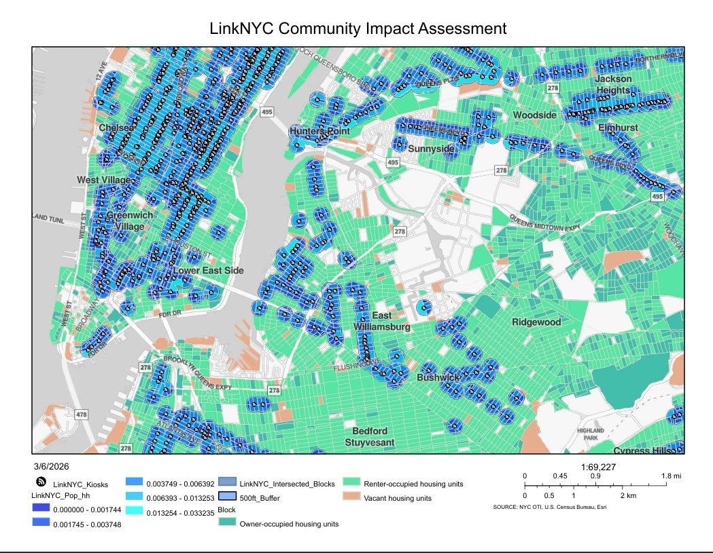
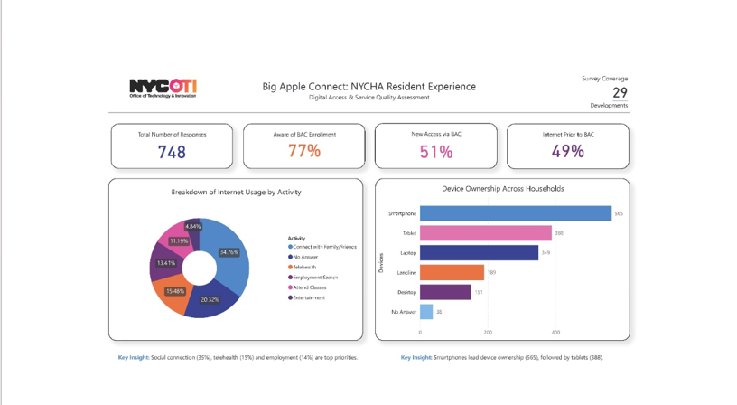
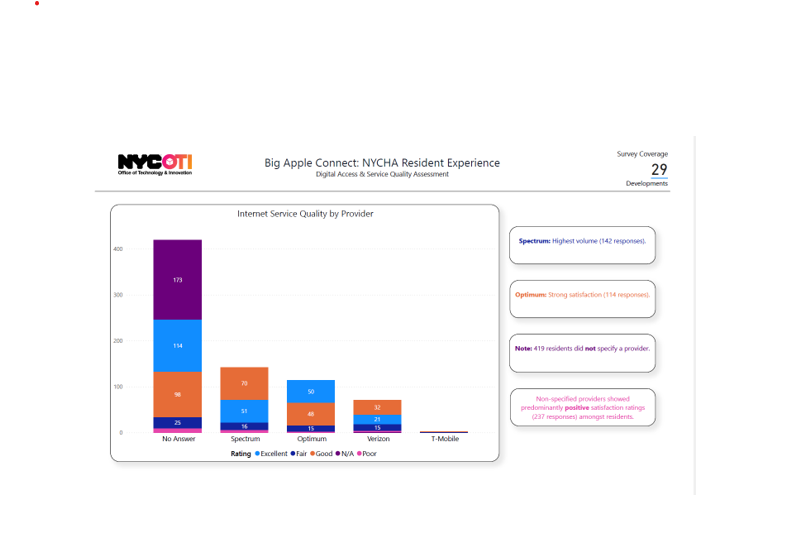
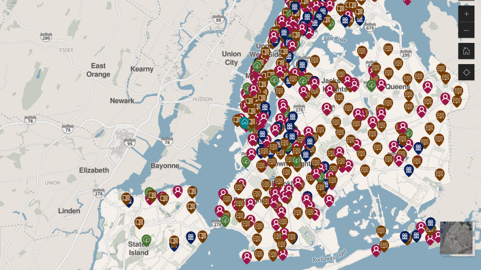

Featured Projects

LinkNYC Community Impact Assessment
Spatial analysis identifying every LinkNYC kiosk within a 500-foot buffer of NYC residents, quantifying resident proximity to public internet access and providing a free transparent public resource.


Big Apple Connect NYCHA Resident Survey
Designed and deployed a satisfaction & enrollment awareness survey for NYCHA residents. Cleaned and visualized response data in a Power BI dashboard for executive stakeholders.
Disconnected by Design
This ArcGIS StoryMap examines how environmental and socioeconomic conditions intersected with digital exclusion during COVID-19, mapping which NYC communities were most affected and who was ultimately left behind when the world moved online.

Is True Digital Equity Being Provided?
A critical spatial examination of the digital divide in underserved NYC communities, mapping how legacy infrastructural inequities translate into present-day broadband deserts.

Citywide Public Computer Center Survey
Surveyed 400+ public computer centers across NYC, led data cleaning and analysis, and co-designed the initial NYC Public Computer Center website prototype, resulting in a live city resource and published dataset on NYC Open Data.